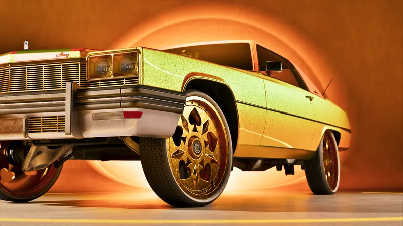

¿Habrá mods en GTA 6? Lo que dicen las normas de Rockstar
Respuesta corta
Rockstar ha publicado normas de mods para todos sus juegos, GTA 6 incluido: toleran los mods de un jugador, sin conexión y sin ánimo de lucro, y restringen ampliar la historia, portar juegos o mezclar títulos. No hay versión de PC anunciada ni herramientas oficiales de mods.

Qué permiten
Según la prensa, las normas aceptan los proyectos de un jugador, sin conexión y sin ánimo de lucro que respeten la propiedad intelectual de terceros. Take-Two ha dicho que, en general, no emprende acciones legales contra ese tipo de proyectos en sus juegos de PC.
Qué restringen
- Ampliar o sustituir las misiones y la historia oficiales.
- Portes no oficiales y mezclas entre juegos de la saga.
- Mods de pago y multijugador: se dirigen a la plataforma oficial para creadores, basada en FiveM.
¿Y en GTA 6?
Las normas son para toda la compañía y no son un anuncio de herramientas de mods para GTA 6. El juego solo está en PS5 y Xbox Series X|S; para PC, mira cuándo sale GTA 6 en PC. No hemos encontrado un texto de Rockstar específico para mods de GTA 6.
Fuentes
- Inven Global: Rockstar publica normas de mods para todos sus títulos
- games.gg: Rockstar endurece las normas de mods
- PC Gamer: Rockstar habla con el desarrollador de OpenIV y aclara su postura sobre los mods
Resumen redactado por 6 Estrellas a partir de las fuentes citadas, revisadas el 20 de noviembre de 2026. Si ves un error, cuéntanoslo desde Quiénes somos.